Which among the following is true with respect to the Lloyds’ algorithm?
It always converges.
It may fail to converge for an initialization while it may converge for otherinitialization.
It is sensitive to outliers.
The solution produced is always the optimal.
Q2MSQ4 marksselect all that apply
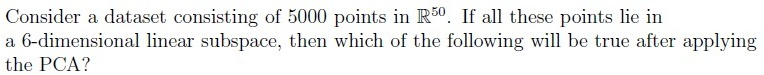
There will be 50 non-zero eigenvalues of the covariance matrix.
There will be 6 non-zero eigenvalues of the covariance matrix.
Using the first 5 principal components, the dataset can be reconstructed withzero residue.
The variance captured by the top 6 principal components equals the totalvariance of the dataset.
Q3MSQ4 marksselect all that apply
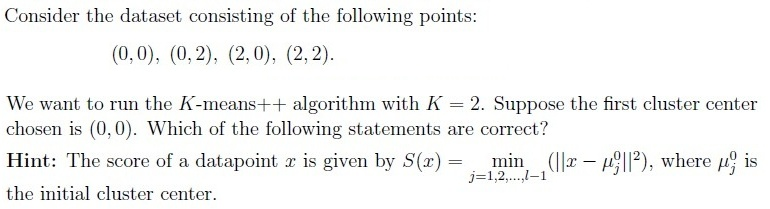
The points (0, 2), (2, 0), and (2, 2) have the equal probability of being chosen asthe second cluster center.
The probability of selecting (2, 2) as the second cluster center is twice that ofselecting (0, 2).
If (2, 2) is chosen as the second cluster center, the algorithm will alwaysconverge in one iteration.
The tie-breaking rule will affect the final cluster centers.
Q4MSQ4 marksselect all that apply
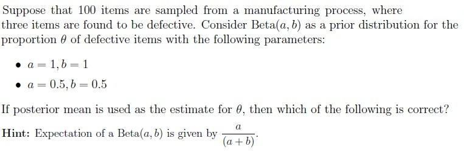
Posterior mean for Beta(1, 1) is 0.039.
Posterior mean for Beta(1, 1) is 0.03.
Posterior mean for Beta(0.5, 0.5) is 0.025.
Posterior mean for Beta(0.5, 0.5) is 0.034.
Q5MSQ3 marksselect all that apply
Which of the following are valid kernel functions? Select all that apply.
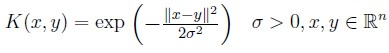
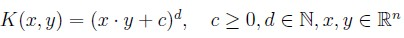
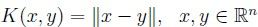
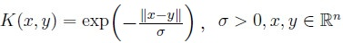
Q6SA3 marks
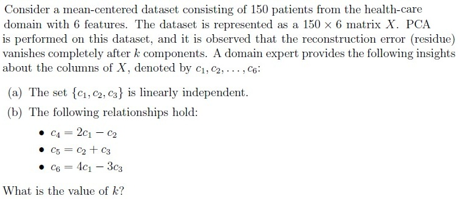
Q7SA3 marks
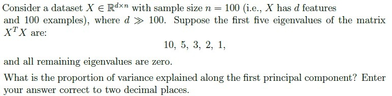
Comprehension passage - the questions below it refer to this
Based on the above data, answer the given subquestions.
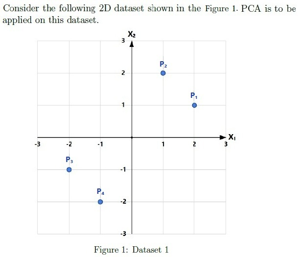
Q8MCQ2 marks
What is the covariance matrix of the dataset?
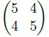
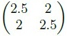
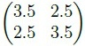
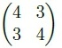
Q9SA2 marks
If standard PCA is performed on this dataset, what is the variance along the first principal component? Enter the answer correct to one decimal place.
Q10SA2 marks
If standard PCA is performed on this dataset, what is the variance along the second principal component? Enter the answer correct to one decimal place.
Comprehension passage - the questions below it refer to this
Based on the above data, answer the given subquestions.
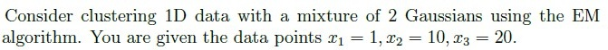
Q11MCQ3 marks
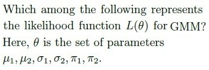
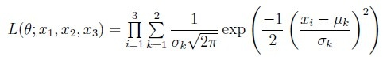
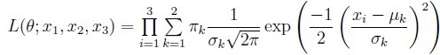
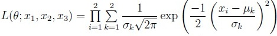
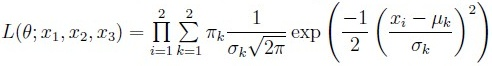
Q12SA3 marks
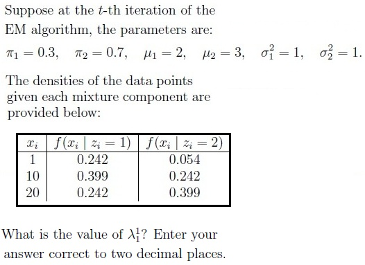
Comprehension passage - the questions below it refer to this
Based on the above data, answer the given subquestions.
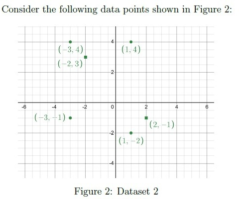
Q13MCQ3 marks
Perform K-means clustering with K = 2 and initial cluster centers at (−2, 3) and (2,−1). What are the final means of clusters after convergence?
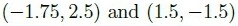
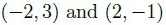
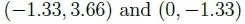
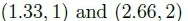
Q14SA2 marks
Suppose we introduce a new data point (0, 0) to the existing dataset and perform K means with the same initial cluster centers. How many iterations would it require now for convergence?
Auto-generated summary from the source site. Handy as a checklist; the lessons above explain each idea from scratch.
Here’s a structured summary of core topics, concepts, principles, and equations essential for the Diploma-Level Machine Learning Techniques exam, based on the provided question paper. The exam focuses on clustering (K-means, Lloyd’s algorithm), PCA, Bayesian inference, kernel methods, and basic linear algebra.
1. Core Topics & Key Concepts
A. Clustering (K-means & Lloyd’s Algorithm)
Lloyd’s Algorithm (Standard K-means)
Steps:
Initialize cluster centers (e.g., randomly or via k-means++).
Assign points to the nearest center (Euclidean distance).
Recompute centers as the mean of assigned points.
Repeat until convergence (centers stabilize).
Convergence:
Guaranteed to converge (monotonically decreases within-cluster sum of squares, WCSS).
May converge to local optima (sensitive to initialization).
Sensitivity to Outliers: Yes (outliers can skew cluster means).
Optimality: Not guaranteed (depends on initialization).
K-means++ Initialization
Probability of selecting a point as a center is proportional to its squared distance from existing centers.
Reduces sensitivity to initialization.
Tie-Breaking in K-means
Affects final clusters if points are equidistant to multiple centers.
Convergence in 1 Iteration
Happens if initial centers are already the final means (e.g., symmetric data).
B. Principal Component Analysis (PCA)
Key Ideas:
Linear dimensionality reduction via orthogonal projection.
Maximizes variance along principal components (PCs).
PCs are eigenvectors of the covariance matrix, ordered by eigenvalues (variance).
Covariance Matrix (Σ)
For a dataset X∈Rn×d (centered):
Σ=n−11XTX
Eigendecomposition: Σ=VΛVT, where:
V: Matrix of eigenvectors (PCs).
Λ: Diagonal matrix of eigenvalues (variances).
Number of Non-Zero Eigenvalues:
Equals the rank of the data matrix (≤ min(n, d)).
If data is d-dimensional but lies in a k-dimensional subspace, only k eigenvalues are non-zero.
Variance Explained:
Total variance = sum of all eigenvalues.
Variance of the i-th PC = i-th eigenvalue (λi).
Reconstruction Error: Zero if all PCs are used; otherwise, equals the sum of discarded eigenvalues.
Standard PCA Steps:
Center the data (subtract mean).
Compute covariance matrix Σ.
Eigendecomposition to get PCs and eigenvalues.
Project data onto top-k PCs.
C. Bayesian Inference (Beta Distribution)
Beta Distribution:
Prior for binomial/proportion data: θ∼Beta(α,β).
Posterior Mean: For s successes and f failures:
E[θ∣data]=s+f+α+βs+α
Special Cases:
Beta(1,1): Uniform prior.
Beta(0.5,0.5): U-shaped prior.
Example Calculation:
Given data with 1 success and 24 failures:
For Beta(1,1): Posterior mean = 1+24+1+11+1=0.039.
For Beta(0.5,0.5): Posterior mean = 1+24+0.5+0.51+0.5=0.034.
D. Kernel Methods
Kernel Trick:
Maps data to a higher-dimensional space where linear separation is possible.
Kernel function: K(xi,xj)=ϕ(xi)Tϕ(xj).
Valid Kernels (must satisfy Mercer’s condition):
Linear: K(xi,xj)=xiTxj.
Polynomial: K(xi,xj)=(xiTxj+c)d.
Gaussian (RBF): K(xi,xj)=exp(−γ∥xi−xj∥2).
Sigmoid: K(xi,xj)=tanh(αxiTxj+c).
E. Linear Algebra Basics
Covariance Matrix:
For 2D data X={(x1,y1),...,(xn,yn)}:
Σ=[Var(x)Cov(x,y)Cov(x,y)Var(y)]
Variance: Var(x)=n−11∑(xi−xˉ)2.
Covariance: Cov(x,y)=n−11∑(xi−xˉ)(yi−yˉ).
Eigenvalues/Eigenvectors:
For a 2x2 matrix A, solve det(A−λI)=0.
2. Key Equations
Topic
Equation
K-means Objective
Minimize ∑k=1K∑xi∈Ck∥xi−μk∥2
Covariance Matrix
Σ=n−11XTX (centered data)
PCA Projection
Z=XVk (project onto top-k PCs)
Beta Posterior Mean
s+f+α+βs+α
Gaussian Kernel
K(xi,xj)=exp(−γ∥xi−xj∥2)
Graph 2: Bayesian Inference & Kernels
Graph 3: Linear Algebra Foundations
4. Exam Tips
K-means:
Remember it always converges but may not find the global optimum.
K-means++ reduces initialization bias.
PCA:
Number of non-zero eigenvalues = rank of the data.
Total variance = sum of all eigenvalues.
Bayesian Inference:
Posterior mean for Beta prior: plug in successes/failures.
Kernels:
Valid kernels must be positive semi-definite.
Covariance Matrix:
Diagonal elements = variances; off-diagonal = covariances.